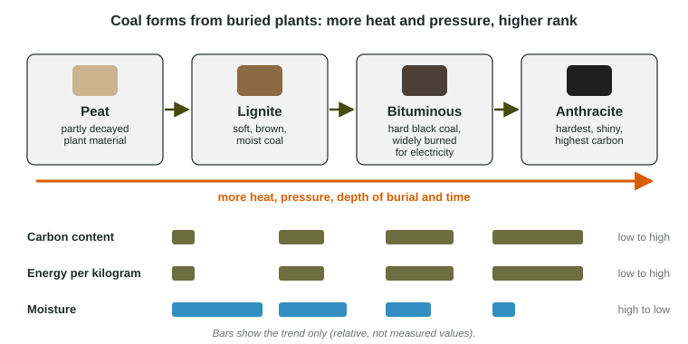

Fuel Types and Uses
The main fuels differ in energy per kilogram, carbon dioxide per unit of energy and use.
Part 1 · Hook
Why this matters
Part 2 · Before you start
What this builds on
Part 3 · Prerequisite check
Quick check before you start
1. What gas is released when fossil fuels burn?
- Carbon dioxide
- Oxygen
- Nitrogen
- Helium
Show the answer
Combustion combines the fuel's carbon with oxygen, making carbon dioxide.
- Correct: Carbon dioxide:
- Oxygen:
- Nitrogen:
- Helium:
2. Why is coal nonrenewable?
- It forms over millions of years, far slower than we use it
- It releases carbon dioxide
- It is mined
- It is black
Show the answer
The rate of formation, not pollution, makes a fuel nonrenewable.
- Correct: It forms over millions of years, far slower than we use it:
- It releases carbon dioxide:
- It is mined:
- It is black:
Part 4 · See it
See it first

Part 5 · Step by step
How it works, step by step
- Plants are buried in swamps without oxygenthey do not fully decay and form peat
- More heat, pressure and time act on the buried peatit becomes lignite, then bituminous coal, then anthracite
- Each step drives off water and concentrates carbonenergy per kilogram rises, so less fuel is needed for the same energy
- A fuel's energy comes more from hydrogen than carbon (natural gas)it releases less carbon dioxide per unit of energy, though not zero
Part 6 · Key ideas
Key ideas
- Coal ranks by energy content: peat (not yet coal), lignite, bituminous, anthracite. Coal is used mainly for electricity and steel making.
- Petroleum (crude oil) is refined by boiling point into gasoline, diesel, jet fuel, heating oil and asphalt. Tar sands hold bitumen, a heavy oil that takes much energy and water to extract.
- Natural gas is mostly methane. It releases about half the carbon dioxide of coal per unit of energy: cleaner, but not zero emissions.
- Wood and charcoal are the main fuels for many poorer households. Cogeneration captures waste heat from making electricity and uses it to heat buildings or water.
Part 7 · Misconception
A common mistake
The wrong idea: Natural gas is a clean fuel, so switching to it means zero carbon dioxide emissions.
What actually happens: Burning methane makes carbon dioxide and water. Natural gas releases about half as much carbon dioxide as coal per unit of energy, so it is cleaner than coal but not zero emissions, and leaked methane is itself a heat-trapping gas.
Part 8 · Check yourself
Check yourself
Exam-style questions. Anything you miss goes into your review queue.
1. Why does burning natural gas release less carbon dioxide per unit of energy than burning coal?
- Natural gas burns at a lower temperature, so less carbon dioxide forms
- Natural gas is renewable, so its carbon dioxide does not count
- Its energy comes partly from hydrogen, which burns to water, not carbon dioxide
- Natural gas contains no carbon atoms, so it makes no carbon dioxide
Show the answer
Methane has four hydrogen atoms for each carbon atom. Burning hydrogen releases energy and makes water, so natural gas gives more energy for each unit of carbon dioxide; it releases roughly half the carbon dioxide of coal per unit of energy. It is not zero emissions.
- Natural gas burns at a lower temperature, so less carbon dioxide forms: The flame temperature is not the reason for the difference.
- Natural gas is renewable, so its carbon dioxide does not count: Natural gas is a nonrenewable fossil fuel.
- Correct: Its energy comes partly from hydrogen, which burns to water, not carbon dioxide: Right: much of the energy comes from hydrogen, which forms water.
- Natural gas contains no carbon atoms, so it makes no carbon dioxide: Methane has a carbon atom, so burning it does make carbon dioxide.
2. Which list puts coal types in order from lowest to highest energy content?
- Lignite, anthracite, bituminous
- Lignite, bituminous, anthracite
- Anthracite, bituminous, lignite
- Bituminous, lignite, anthracite
Show the answer
With more heat and pressure over time, lignite becomes bituminous coal and then anthracite, gaining carbon and energy per kilogram.
- Lignite, anthracite, bituminous: Anthracite is the highest rank.
- Correct: Lignite, bituminous, anthracite: Right: energy content rises from lignite to bituminous to anthracite.
- Anthracite, bituminous, lignite: This is the order from highest to lowest.
- Bituminous, lignite, anthracite: Lignite is the lowest rank of coal.
3. Which describes cogeneration?
- Making electricity in two generating stations that share one fuel supply
- Mixing coal and natural gas before they are burned
- Using the waste heat from making electricity to heat buildings or water
- Burning two fuels at once in a single furnace to make more heat
Show the answer
In cogeneration (combined heat and power), the heat that would be lost from making electricity is captured and used, so more of the fuel's energy does useful work.
- Making electricity in two generating stations that share one fuel supply: Sharing a fuel supply does not capture any waste heat.
- Mixing coal and natural gas before they are burned: Mixing fuels does not reuse waste heat.
- Correct: Using the waste heat from making electricity to heat buildings or water: Right: electricity and useful heat from the same fuel.
- Burning two fuels at once in a single furnace to make more heat: Burning two fuels is co-firing, not cogeneration.
Data
Energy content and carbon dioxide of five fuels
| Fuel | Energy content (MJ per kg) | Carbon dioxide (kg per GJ) |
|---|---|---|
| Lignite | 15 | 95 |
| Bituminous coal | 27 | 90 |
| Anthracite | 30 | 98 |
| Gasoline | 46 | 67 |
| Natural gas | 50 | 50 |
4. How much energy, in MJ, do 40 kg of anthracite release when burned?
Type a number, then its unit (MJ). Scale words (2.5 million) and powers of ten (2.5 × 10^6) are read.
Show the answer
- Answer: 1200 MJ
5. A factory uses 2,000 GJ of energy a year. Write the setup for the carbon dioxide it would avoid each year by switching from bituminous coal to natural gas, then give the answer in kg.
Type the setup as on the exam, with brackets and units, then the answer.
Show the answer
Each GJ saves kg. Setup:
- Setup: ; answer 80,000 kg
6. Which conclusion about coal is best supported by the table?
- Higher-rank coal holds more energy per kilogram
- Lignite releases the least carbon dioxide of the three coals
- The three coals hold the same energy per kilogram
- Coal releases less carbon dioxide per GJ than gasoline
Show the answer
Energy content rises from lignite (15 MJ/kg) to bituminous (27) to anthracite (30).
- Correct: Higher-rank coal holds more energy per kilogram: Right: 15, 27 and 30 MJ per kg rise with rank.
- Lignite releases the least carbon dioxide of the three coals: Bituminous coal (90 kg per GJ) releases less than lignite (95).
- The three coals hold the same energy per kilogram: The three values are 15, 27 and 30 MJ per kg.
- Coal releases less carbon dioxide per GJ than gasoline: Each coal releases more carbon dioxide per GJ (90 to 98) than gasoline (67).
Part 9 · Summary
Summary
Part 10 · Up next
What comes next
Part 11 · Connections